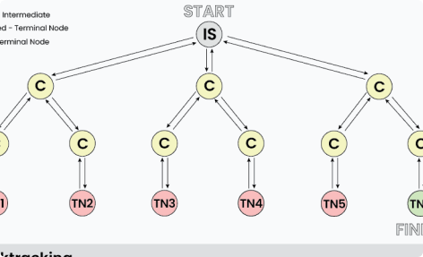
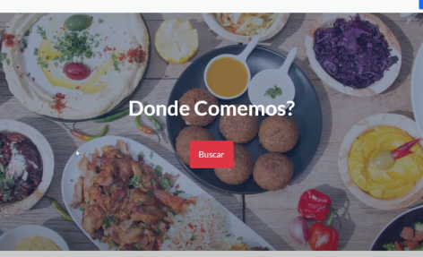
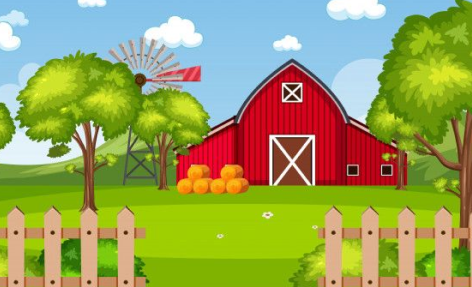

Portfolio

Backtracking Gen Implementation
Implementación en java de algoritmos de backtracking utilizando diferentes métodos de poda y comparando la complejidad temporal de la implementación
App mobile inmobiliaria
Implementación back-end de una app mobile para compra/alquiler de inmuebles
GudBoy Veterinaria
Implementación back-end en java de una veterinaria aplicando patrones de diseño como strategy y adapter

Blog Restaurante
Blog de reseñas de restaurantes

Granja Gallinas
Proyecto de implementación de una granja de gallinas en el cual las gallinas pueden ser compradas, vendidas, pueden tener huevos y morir